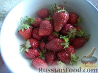
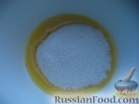
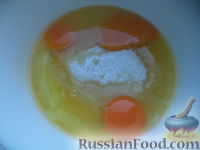
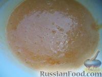
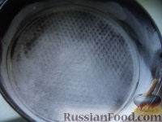
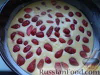
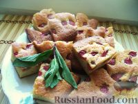

Клубничный пирог
Ингредиенты:
- сливочное масло — 100 г
- сахар — 1 стакан
- куриные яйца — 3 штуки
- разрыхлитель — 1 чайная ложка
- ванилин — по вкусу
- соль — щепотка
- молоко — 3 столовые ложки
- клубника — 250 г
- пшеничная мука — 1 стакан
- сметана — 2 столовые ложки
Приготовление:
- Клубнику тщательно вымыть.
- 
- Клубнику очистить от "хвостиков". Крупную разрезать на 2-4 части. Включить духовку.

- На минимальном огне растопить сливочное масло.

- В миску вылить растопленное масло, добавить сахар.
- 
- Затем добавить яйца, соль, ванилин и разрыхлитель.
- 
- Все тщательно перемешать.
- 
- Влить молоко. Перемешать.

- Муку просеять и добавить частями в тесто.

- Все тщательно перемешать. Тесто должно быть по консистенции как густая сметана. Если есть необходимость муки добавлять сколько нужно.

- Форму смазать маслом, обсыпать мукой.
- 
- Вылить тесто в форму.

- Распределить равномерно клубнику.
- 
- Поместить клубничный пирог в разогретую духовку на среднюю полку.

- Выпекать пирог с клубникой при 180 градусах до золотистости (30-40 минут).

- Готовый клубничный пирог остудить, разрезать на кусочки.Приятного аппетита!
- 